Fleetview 入口提示
要解决的不是箭头字形，而是：低频操作说明是否应该在静止状态永久占一整行。
A · 只在管理时提示（推荐）
静止时从 ● main 直接开始，不显示任何说明。按下 ↓ 进入管理后，才在列表上方临时展开一行完整操作提示；退出后这一行消失。
实际变化
- 静止
- 零提示、零额外高度
- 管理
- 出现一行上下文操作
- 发现入口
/agents命令 + 已学会的↓- 窄屏
- 压缩文案，不截断列表
这保留了 Claude Code 的关键逻辑：管理模式中有明确的键位说明；但不把 Claude 内置 footer 里的常驻提示硬搬成 Fleetview 标题。
静止状态
列表本身就是内容，不再用说明抢第一眼。
{kind=link}
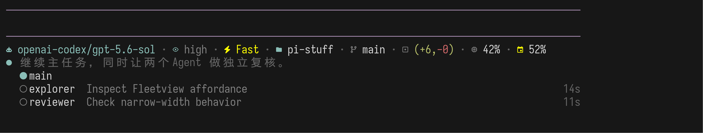
{kind=link}
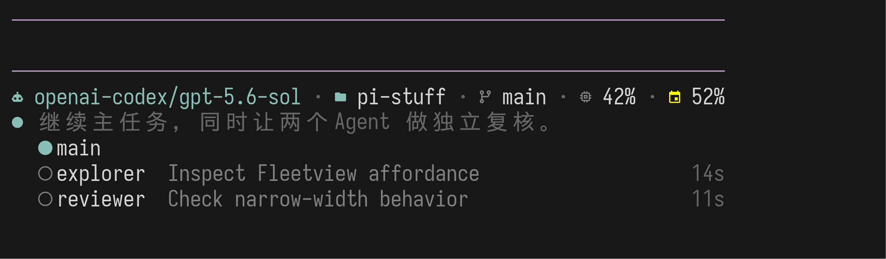
管理状态
进入后才出现完整、可撤销的操作语法。
{kind=link}
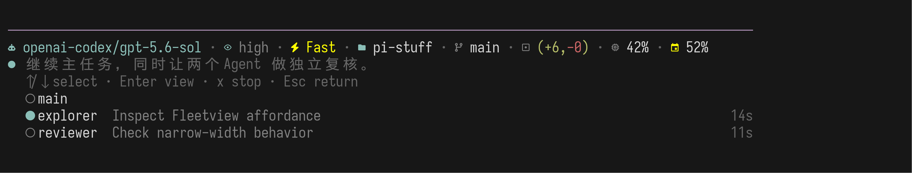
{kind=link}
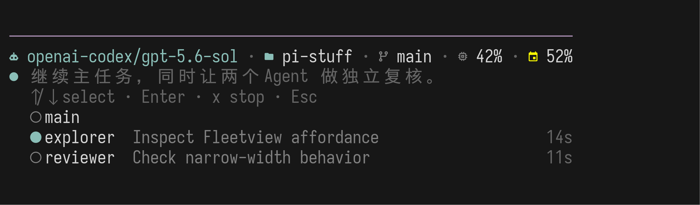
B · 固定的 Agents 标题
永久保留第一行，但把命令改成中性的 Agents · 2 active。进入管理时，同一行变成键位说明，因此列表高度始终不变。
实际变化
- 静止
- 显示数量标题
- 管理
- 标题原位变成操作提示
- 优点
- 高度稳定、分区明确
- 代价
- 重复列表已有信息
它解决了“箭头像半句话”的问题，却没有解决“低价值内容永久占第一行”的问题。窄屏中标题尤其显得比列表更重。
静止状态
标题稳定存在。
{kind=link}
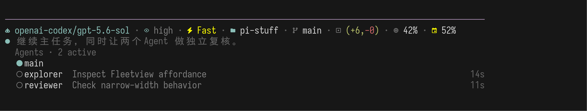
{kind=link}
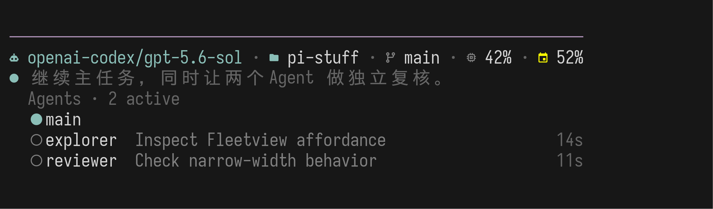
管理状态
同一行切换为管理语法。
{kind=link}
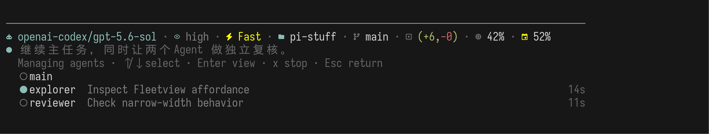
{kind=link}
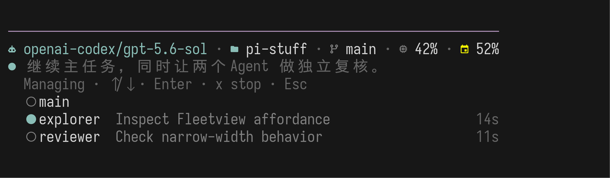
C · 操作跟随对应行
不增加标题行。静止时把 /agents 放在 main 行右侧；管理时，Esc 跟随 main，Enter / x 跟随当前 Agent。
实际变化
- 静止
- 命令在 main 行最右侧
- 管理
- 操作分散到两个对象行
- 优点
- 始终不增加高度
- 代价
- 宽屏跨度大、状态列被替换
这最省高度，但真实截图暴露了问题：宽屏下 /agents 和 main 距离太远；进入管理后，操作语法被拆成两段，读取顺序不自然。
静止状态
入口命令右对齐。
{kind=link}
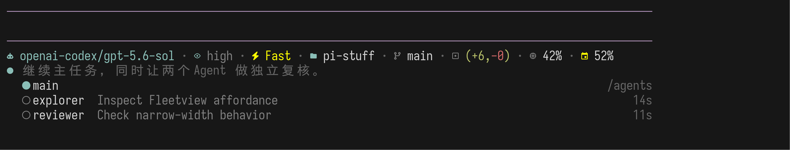
{kind=link}
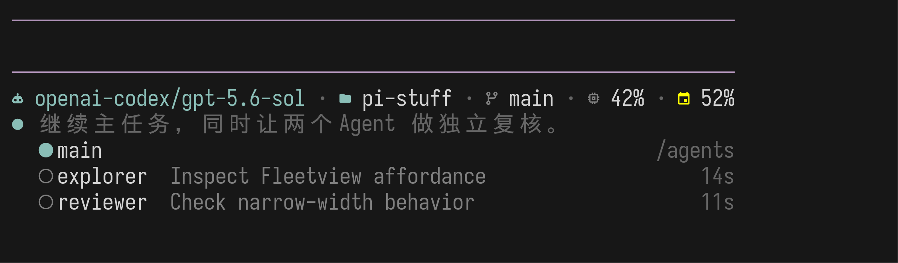
管理状态
提示跟随对象，但覆盖原状态列。
{kind=link}
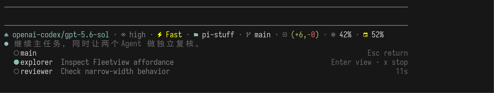
{kind=link}
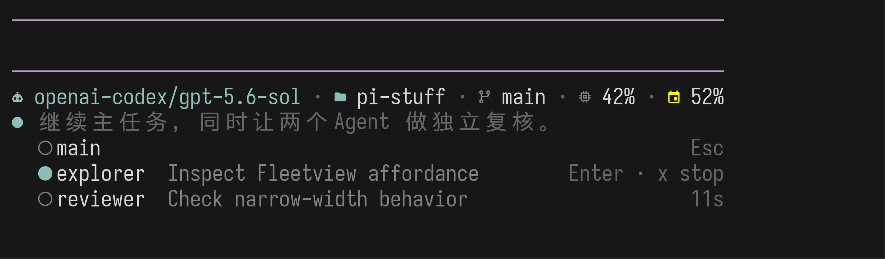
Claude Code 2.1.197 · 真实行为证据
Claude 的静止状态把 ↓ to manage 放在自己的内置 footer 提示行；进入管理后，才在 roster 上方展开一行 ↑/↓ to select · Enter to view。Pi Stuff 已把该 footer 位置交给两行 Statusline，因此不应把剩下半句移到 Fleetview 内部冒充标题。


建议采用 A：静止 Fleetview 没有标题、没有入口提示，从 ● main 开始；只有按下 ↓ 后，列表才临时增加一行完整键位说明。/agents 继续作为明确、可发现的管理入口。